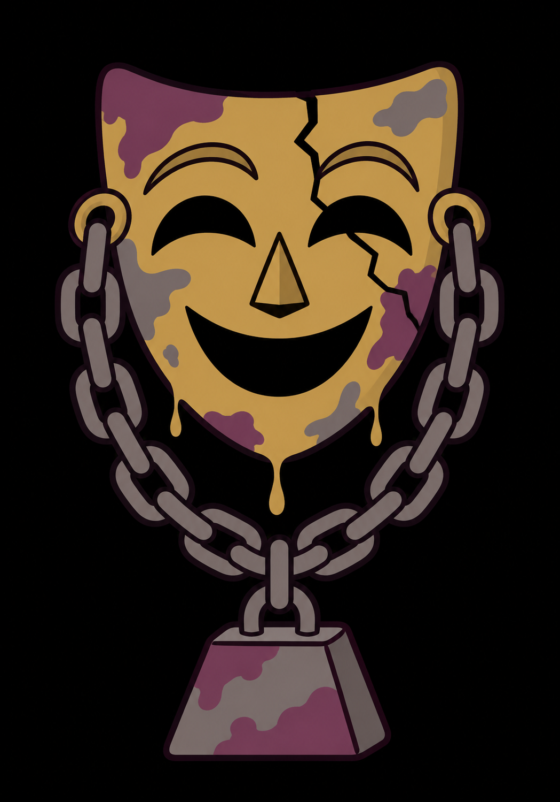
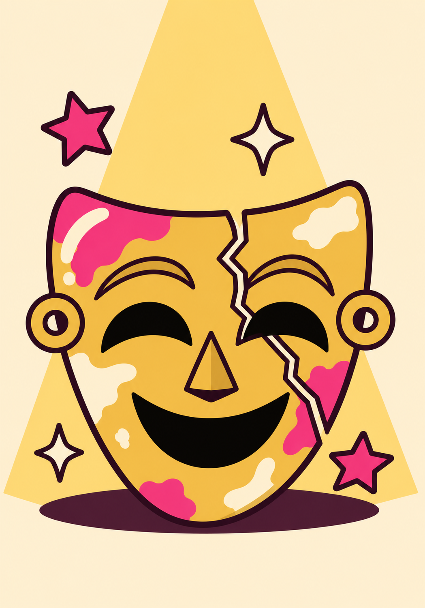

The rhinestones are heavy tonight. Every note has to carry a name that isn't yours, and it comes out thin. The lie itself, though? That you sell beautifully.
Disadvantage on Performance checks.
Advantage on Deception checks.

No famous grandmother. Just you in the light, singing in a voice that's finally your own, and the whole room hears the difference.
Replaces The Weight of Your Lies.
Advantage on Performance checks.
Your Bardic Inspiration die is one size larger (d8 → d10).
No more advantage on Deception checks.
For the rest of the campaign.